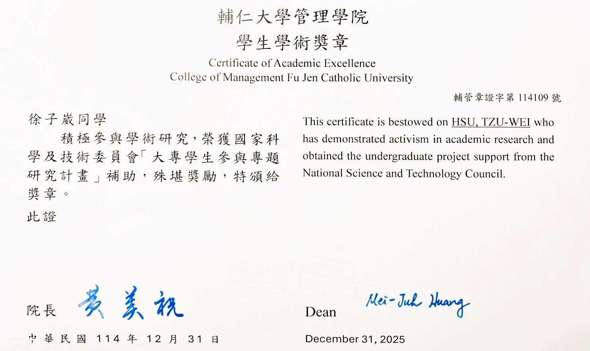
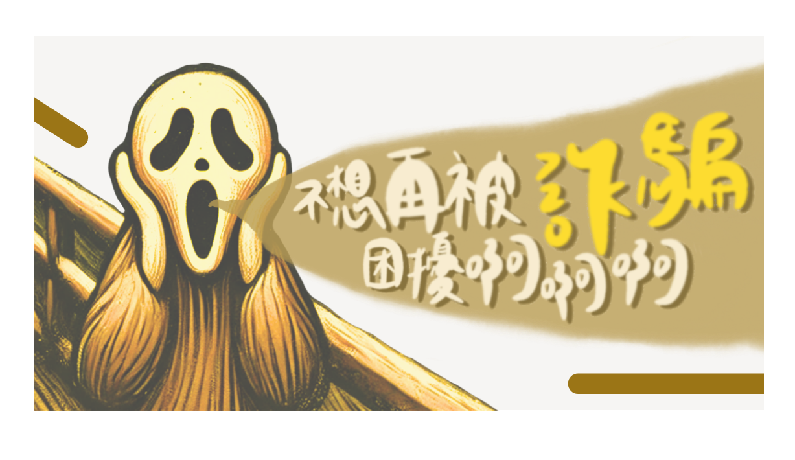
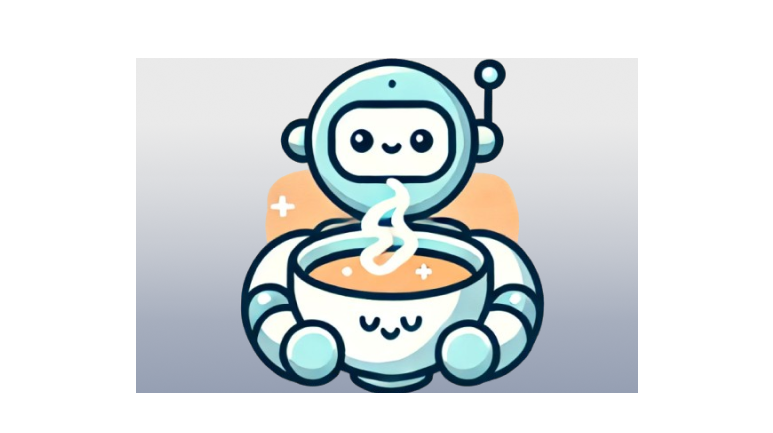
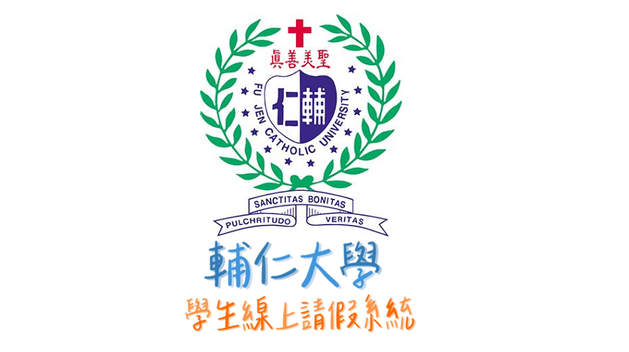
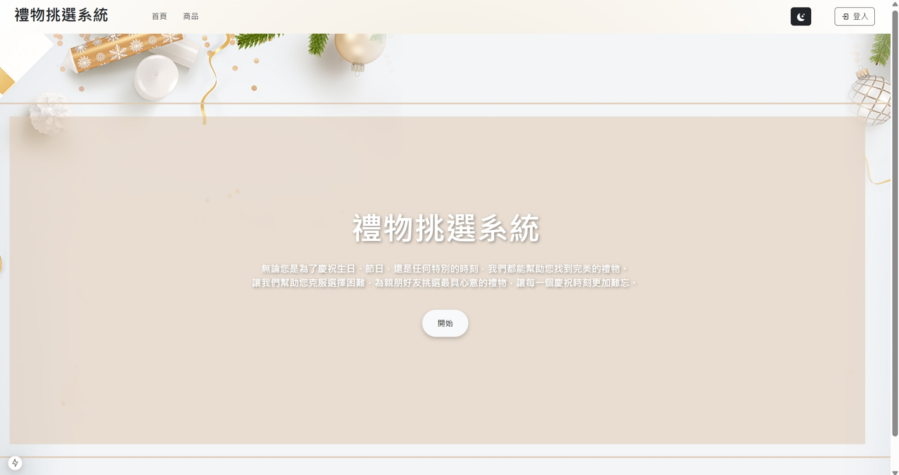

國科會大專生研究計畫
計畫編號：114-2813-C-030-031-E
指導教授：吳濟聰
本研究主要探討LLM與ML於詐騙訊息偵測任務上的效能差異，並分析其對於情緒操控字眼與隱性詐騙關鍵字的判斷能力。
- 基準模型:TF-IDF 結合 Logistic Regression
- 比較模型:Gemini、Mistral等雲端LLM以及本地端微調之Qwen-LoRA
- 評估指標:Accuracy, Precision, Recall, F1-score

畢業專題-騙局雷達
我們團隊希望透過AI情感分析及將文字進行自然語言處理分詞，更準確地防範目前容易忽略的「沉浸對話式詐騙」、更利用網頁爬蟲抓取關鍵字的方式，
辨識此網站是否含有詐騙資訊。希望能及時幫助民眾保住小額、甚至是大額的錢財，減少詐騙集團騙取的機會。
育秀盃創意獎佳作
專題發表優秀組別

推理AI派對-AI手遊
這是一款結合生成式AI技術的互動解謎平台，包含三個遊戲：海龜湯、誰是臥底及猜誰是AI，每個遊戲都在傳統玩法基礎上增添創新元素。

系統分析與設計-請假系統
我們希望開發一套線上請假系統，讓學生能清楚查看課程與請假規則，並方便線上提交請假申。系統將通知老師學生的請假狀況，並結合點名功能，自動排除已請假者，避免重複紀錄。此系統也作為師生溝通的橋梁，幫助老師即時了解學生狀況並適時關心。

轉盤禮物系統
轉盤禮物系統是一種互動式抽獎機制，透過隨機轉動轉盤決定獎品，兼具娛樂性與驚喜感。參與者只需點擊或拉動即可啟動轉盤，最終指針停留的位置即為中獎禮物。並且可以點擊連結直接至蝦皮購買評價最好的店家。

專題評分系統
專題評分系統是一套用於專題課程或比賽的評量工具，透過標準化的評分指標，協助教師或評審進行公平客觀的評估。系統可依照專題內容、創意、實作成果、簡報表現與團隊合作等面向進行量化打分，並自動彙整結果，提供總分與排名。此系統能提升評分效率，減少主觀偏差，並讓學生清楚了解自身優缺點，作為後續改進的依據。

FIGMA創新
我們的SDGS是優質教育，經過訪談之後我們認為「國際觀」是需要在日常生活培養的，培養出國際觀之後才能和國際接軌。培養國際觀要積極接收資訊，但資訊往往都是由英文撰寫，所以長期觸碰英文的資訊是最即時的，同時培養英文能力也可用在各種環境。因此，雙語教育是優質教育中我們較為注重的。